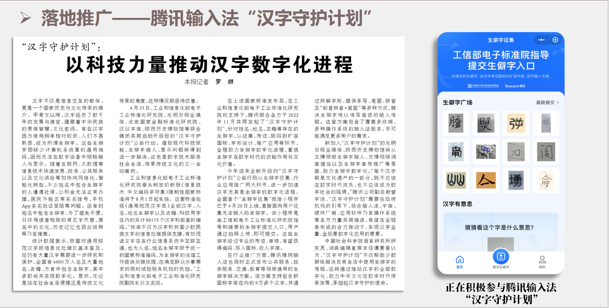
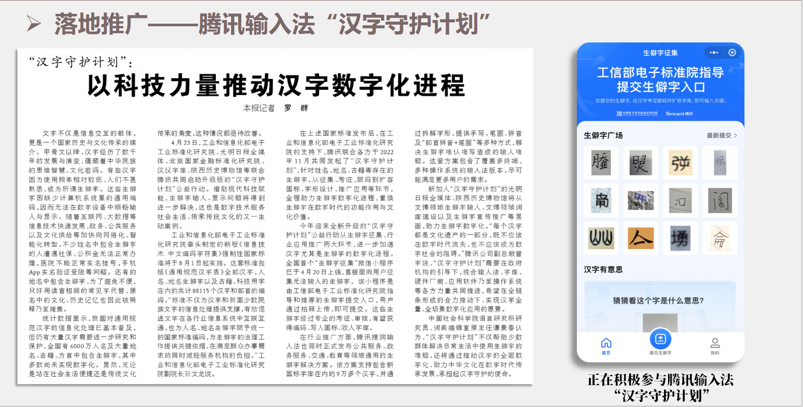
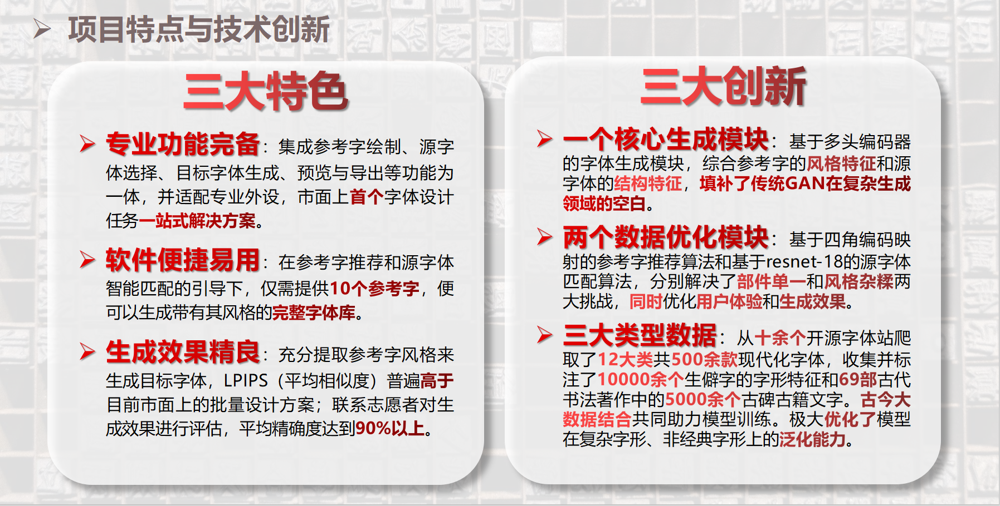

笔韵智枢：生成式AI驱动的智能一体化字体创作引擎
项目概述
笔韵智枢 是专为字体设计和文化创意领域设计的高级智能一体化字体创作引擎。该系统结合高分辨率、高精度模型技术和双角度监测策略，适用于文化传承、创意设计和智能字体生成等行业，致力于与企业、政府合作，以保障中华文化的传承与创新。
- 本作品立足于 文化传承、创意设计、智能生成 等国家新兴技术赋能行业。
- 应用于 高精度字体生成 和 文化创意内容创作 等各类场景。
- 致力于保障中华文化的传承与创新。
大数据驱动的智能推荐模块
参考字智能推荐模块：兼顾用户体验和生成效果
结合用户交互和AI算法，自动识别和推荐最适合的参考字样式，提升创作效率96%。
用户体验与效率并重
参考字数据优化可同时提升效率与用户体验，满足专业创作者和普通用户的不同需求。

多级优化策略
通过参考字形格参考图、文字内容参考图和生成文字三步策略，实现精准字体创作。
字体风格智能分析
自动分析和识别多种字体风格特征，为创作提供精准参考。
优化效果对比分析
参考字数据优化前后对比展示，明显提升了效率和质量。
应用场景
文化传承
帮助传统书法和字体艺术的数字化保存与传承，为文化遗产提供技术支持。将珍贵的书法字体和古籍文献通过智能化手段进行采集、分析和复原，确保中华优秀传统文化得以长久保存和广泛传播。
通过数据库建设和AI模型训练，可以实现对濒临失传字体的保护与再现，为后人留下宝贵的文化财富。同时，利用现代技术手段，让传统文化以更加生动有趣的方式呈现给大众。
创意设计
为设计师提供智能化的字体创作工具，大幅提升设计效率与质量。基于深度学习的字体生成技术，能够根据设计师的需求快速生成符合特定风格的字体，避免繁琐的手工绘制过程。
系统还能提供智能推荐和风格迁移功能，帮助设计师拓展创意思路，尝试更多可能性。对于品牌标识、海报、包装等设计场景，本系统能显著提高创作效率，降低设计成本。
教育培训
辅助书法教育与汉字书写学习，提供个性化的教学指导。系统能够分析学习者的书写特点，识别笔画结构和书写习惯中的问题，并给出针对性的改进建议。
对于书法爱好者和学生，系统可以提供标准字形参考和实时评估，让学习过程更加直观高效。通过数据分析，教师也能更好地了解学生的学习状况，调整教学方案，实现因材施教。
内容创作
为媒体和内容创作者提供多样化的字体风格选择，丰富表现形式。在新媒体时代，优质的视觉表达对内容传播效果至关重要，本系统能够根据内容主题和情感基调，自动推荐匹配的字体风格。
创作者可以使用系统生成独特的标题字体和排版效果，提升作品的专业感和识别度。对于短视频、公众号、电子书等领域的创作者，本系统将成为提升内容品质的得力助手。
 

系统实现
我们的系统坚持从双重监测角度出发，同时实现一体化通信和数据治理的交叉融合。
